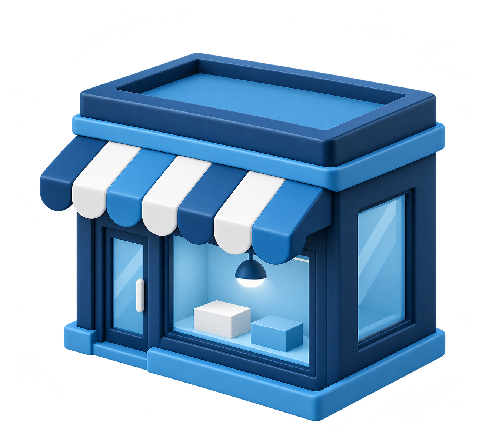

01 PER IL CLIENTE
Pagare
con chiarezza.
Contante, carta, smartphone: semplicità con lo strumento scelto.
BIG BUYER 2026 · MILANO
I numeri della
trasformazione digitale.
ACQUISTI ONLINE · ITALIA / 2024
degli italiani tra 16 e 74 anni
ha acquistato online negli ultimi 12 mesi.
Il dato riguarda l’e-commerce.
Non misura gli acquisti nei negozi fisici.
ABITUDINI CHE CAMBIANO
Il percorso d’acquisto passa anche dal digitale.
Il negozio può restare un riferimento per presenza, servizio e fiducia.
Il ruolo del punto vendita ↗Fonte: ISTAT · Percorsi digitali della popolazione italiana · 2024 ↗
L’ESPERIENZA AL BANCO
01 PER IL CLIENTE
Contante, carta, smartphone: semplicità con lo strumento scelto.
02 PER L’ESERCENTE
Un servizio integrato nell’operatività quotidiana del negozio.
Contesto: Banca d’Italia · Indagine BCE SPACE 2024 · pubblicata nel 2025 ↗
PAGAMENTI DIGITALI · ITALIA / 2025
TRANSATO DIGITALE
↗ +7%rispetto al 2024
QUOTA DEI CONSUMI
regolata con
strumenti elettronici.
CONTACTLESS
nel 2025 · +11%
rispetto al 2024.
COME SI PAGA · QUOTA DEL VALORE DEI CONSUMI
Fonte: Osservatorio Innovative Payments · Politecnico di Milano · marzo 2026 ↗ · Dati nazionali.
DAL LUOGO ALLA RELAZIONE
Persone, negozio e servizi digitali possono creare un’esperienza continua.
Più accesso.
Meno complessità operativa.
POSSIBILI DIREZIONI

Servizi utili, un motivo in più per entrare.
DA OSSERVARE NUOVI INGRESSISemplicità e continuità nella relazione.
DA OSSERVARE FREQUENZA DI RITORNONuove attività, pertinenti e sostenibili.
DA OSSERVARE RICAVI DEI SERVIZITECNOLOGIA E RELAZIONE
Il cliente paga con lo smartphone.
L’esercente lo assiste.
PRIMA DI SCEGLIERE
Quattro domande per valutare una nuova soluzione.
01 CLIENTE
02 NEGOZIO
03 GESTIONE
04 RISULTATI
OLTRE IL PUNTO VENDITA
Il digitale amplia
le possibilità.
Le persone danno valore
alla prossimità.
BIG BUYER 2026 SNAG-FEDERCARTOLAI · MILANO